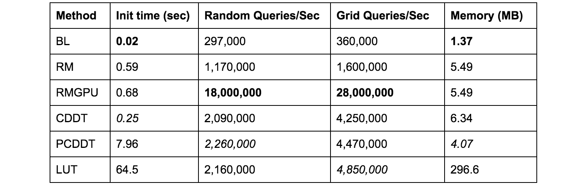

RangeLibc#
This library provides for different implementations of 2D raycasting for 2D occupancy grids, including the Compressed Directional Distance Transform (CDDT) algorithm as proposed in this publication. The code is written and optimized in C++, and Python wrappers are also provided.
Building the Code#
The following has been tested on Ubuntu 14.04, OSX 10.10, and Ubuntu 16.06. Hopefully it will work on other systems as well, or will at least be not too difficult to fix.
C++ code#
# clone the repository
git clone https://github.com/kctess5/range_libc
cd range_libc
mkdir build
cd build
cmake ..
make
If you get an error about having the wrong version of CMake, install a version of CMake that is less than or equal to 3.6 (I use 3.6) from here: https://cmake.org/download/
If you don't want to update your system's version of CMake, simply:
# unzip cmake download and cd into that directory
mkdir build
cd build
cmake ..
make
# 3.6 should be your cmake version number
sudo ln -s [path to cmake directory]/build/bin/cmake /usr/bin/cmake3.6
Then use cmake3.6 instead of cmake in the above instructions for building the range_lib code.
Python Wrappers#
To build the code and its associated Python wrappers for use in Python code, do the following. You may have to install Cython if you do not already have it on your system.
Another dependency for building the python wrapper is transforms3d which replace tf.transformations in ROS 1.
# clone the repository
git clone https://github.com/kctess5/range_libc
cd range_libc_dist/pywrapper
# for an in place build, do this:
python setup.py build_ext --inplace
# for a system wide install, do this:
python setup.py install
# to compile with the GPU kernels, do this:
WITH_CUDA=ON python setup.py install
# this should take a few seconds to run
python test.py
To see example usage of the Python wrappers (using the ROS specific helpers) see https://github.com/mit-racecar/particle_filter. See the /docs folder for documentation.
Building on a RACECAR#
MIT's 6.141 uses this library for accelerating particle filters onboard the RACECAR platform. To install this on the Jetson TX1, do:
# Copy the code
cd range_libc
# this part is not strictly necessary, but useful for debugging compilation issues
mkdir build
cmake ..
make
# To build the Python wrappers
sudo apt-get install Cython
cd pywrapper
sudo WITH_CUDA=ON python setup.py install
License#
This code is licensed under Apache 2.0. Copyright 2017 Corey H. Walsh.
You may obtain a copy of the License at: http://www.apache.org/licenses/LICENSE-2.0
Enjoy!
Cite#
This library accompanies the following publication.
@article{walsh17,
author = {Corey Walsh and
Sertac Karaman},
title = {CDDT: Fast Approximate 2D Ray Casting for Accelerated Localization},
volume = {abs/1705.01167},
url = {http://arxiv.org/abs/1705.01167},
year = {2017}}
Code structure#
range_libc_dist/
├── build
│ └── bin # this is where compiled binaries will be placed
├── CMakeLists.txt # compilation rules - includes, etc
├── includes
│ ├── lru_cache.h # implementation of LRU_cache, optionally used
│ ├── RangeLib.h # main RangeLib source code
│ ├── CudaRangeLib.h # cuda function header file
│ ├── kernels.cu # cuda kernels for super fast 2D ray casting
│ └── RangeUtils.h # various utility functions
├── license.txt
├── main.cpp # example c++ usage and simple benchmarks
├── make_plots.py # turns fine-grained benchmark information into violin plots
├── tmp/ # make this directory for saving fine-grained timing information
├── maps # example PNG maps
│ └── [various .png files]
├── pywrapper
│ ├── RangeLibc.pyx # wrapper file for using RangeLib from Python
│ ├── setup.py # compilation rules for Cython
│ └── test.py # example Python usage
├── README.md
└── vendor # various dependencies, see in here for licenses
├── distance_transform.h # for computing euclidean distance transform
├── gflags # command line flag library from Google
└── lodepng # simple PNG loading/saving library
RangeLibc Algorithms Overview#
* Bresenham's Line (BL) * Ray Marching (RM/RMGPU) * Compressed Directional Distance Transform (CDDT/PCDDT) * Giant Lookup Table (GLT)

The above benchmarks were performed on an NVIDIA Jetson TX1 with a single thread. For a better treatment, see the paper associated with this library: http://arxiv.org/abs/1705.01167
Bresenham's Line (BL)#
Bresenham's line algorithm [1] is one of the most widely used methods for two dimensional ray casting in occupancy grids. The algorithm incrementally determines the set of pixels that approximate the trajectory of a query ray starting from the query point (x,y){query} and progressing in the theta direction one pixel at a time. The algorithm terminates once the nearest occupied pixel is discovered, and the euclidean distance between that occupied pixel and (x,y)_{query} is reported. This algorithm is widely implemented in particle filters due to its simplicity and ability to operate on a dynamic map. The primary disadvantage is that it is slow, potentially requiring hundreds of memory accesses for a single ray cast. While average performance is highly environment dependent, Bresenham's Line algorithm is linear in map size in the worst case.
Ray Marching (RM/RMGPU)#
Ray marching [2] is a well known algorithm, frequently used to accelerate fractal or volumetric graphical rendering applications. The basic idea can be understood very intuitively. Imagine that you are in an unknown environment, with a blindfold on. If an oracle tells you the distance to the nearest obstacle, you can surely move in any direction by at most that distance without colliding with any obstacle. By applying this concept recursively, one can step along a particular ray by the minimum distance to the nearest obstacle until colliding with some obstacle. The following figure demonstrates this idea graphically (from [3]).

In the occupancy grid world, it is possible to precompute the distance to the nearest obstacle for every discrete state in the grid via the euclidean distance transform.
This method is implemented both for the CPU and GPU in RangeLibc. The GPU implementation is the fastest available method for large batches of queries.
Pseudocode:#
# compute the distance transform of the map
def precomputation(omap):
distance_transform = euclidean_dt(omap)
# step along the (x,y,theta) ray until colliding with an obstacle
def calc_range(x,y,theta):
t = 0.0
coeff = 0.99
while t < max_range:
px, py = x + cos(theta) * t, y + sin(theta) * t
if px or py out of map bounds:
return max_range
dist = distance_transform[px,py]
if dist == 0.0:
return sqrt((x - px)^2 + (y - py)^2)
t += max(dist*coeff, 1.0)
Analysis#
Precomputation: O(|theta_discretization|*|edge pixels in occupancy grid|+|theta_discretization|*|occupied pixels|*log(|occupied pixels|)) Pruning: O(|map width|*|map height|*|theta_discretization|*log(min(|occupied pixels|, longest map dimension))) Calc range: O(log(min(|occupied pixels|, longest map dimension))) Memory: O(|theta_discretization|*|edge pixels|) - in practice much smaller, due to pruning
Pros
- Fast calc_range on average
- Space efficent
- Easy to implement, and easy to implement on a GPU
- Fairly fast to compute distance transform
- Extends easily to 3D
Cons
- Poor worst case performance - degenerate case similar to Bresenham's line
- High degree of control flow divergence (for parallelization)
- Not great for incrementally changing the map
Compressed Directional Distance Transform (CDDT/PCDDT) (ours)#
The Compressed Directional Distance Transform (CDDT) algorithm uses a compressed data structure to represent map geometry in a way which allows for fast queries. An optional pruning step removes unneeded elements in the data structure for slightly faster operation (PCDDT). For a full description of the algorithm, see the associated paper: http://arxiv.org/abs/1705.01167
Pseudocode:#
# for the given theta, determine a translation that will ensure the
# y coordinate of every pixel in the rotated map will be positive
def y_offset(theta):
pass
# give the range of y coordinates that the pixel overlaps with
def y_bounds(pixel):
return range(min(pixel.corners.y), max(pixel.corners.y))
# build the CDDT datastructure
def precomputation(omap):
# prune any unimportant geometry from the map
edgeMap = morphological_edge_transform(omap)
# build the empty LUT data structure
compressed_lut = []
for each theta in |theta_discretization|:
projection_lut = []
for each i in range(lut_widths[theta]):
projection_lut.append([])
compressed_lut.append(projection_lut)
# populate the LUT data structure
for each theta in |theta_discretization|:
for each occupied pixel (x,y) in omap:
pixel.rotate(theta)
pixel.translate(y_offset(theta))
lut_indices = y_bounds(pixel)
for each index in lut_indices:
compressed_lut[theta][index].append(pixel.center.x)
# sort each LUT bin for faster access via binary search
for each theta in |theta_discretization|:
for each i in compressed_lut[theta].size():
sort(compressed_lut[theta][i])
# (optional) remove unused entries from the LUT to save space
# highly recommended for static maps
def prune():
# build an empty table of sets to keep track of which
# indices in the CDDT data structure are used
collision_table = []
for theta in range(theta_discretization):
collision_row = []
for i in range(compressed_lut[theta].size()):
collision_row.append(set())
collision_table.append(collision_row)
# ray cast from every possible (x,y,theta) state, keeping track
# of which LUT entries are used
for x in range(omap.width):
for y in range(omap.height):
for theta in range(theta_discretization):
# keep track of which object in the LUT is found to collide
# with the following ray cast query
calc_range(x,y,theta) implies (lut_bin, lut_bin_index)
collision_table[theta][lut_bin].add(lut_bin_index)
# remove any element of the LUT that is not in the collision table
for theta in range(theta_discretization):
for i in range(compressed_lut[theta].size()):
new_lut_bin = []
for obstacle in compressed_lut[theta][i]:
if obstacle in collision_table:
new_lut_bin.append(obstacle)
else: continue
compressed_lut[theta][i] = new_lut_bin
# compute the distance to the nearest obstacle in the (x,y,theta) direction
def calc_range(x,y,theta):
angle_index, discrete_angle, flipped_search = discretize_theta(theta)
lut_x, lut_y = rotate(x, y, discrete_angle)
if omap.occupied(x,y):
return 0.0
lut_bin = compressed_lut[angle_index][(int)lut_y]
if flipped_search:
nearest_obstacle_x = lut_bin.next_lesser_element(lut_x)
else:
nearest_obstacle_x = lut_bin.next_greater_element(lut_x)
distance = abs(nearest_obstacle_x - lut_x)
return distance
Analysis#
Precomputation: O(|width|*|height|) for 2D grid. In general O(dk) where d is the dimensionality of the grid, and k is the number of grid locations. Calc range: worst case O(|longest map dimension|), on average much faster (close to logarithmic performance in scene size) Memory: O(|width|*|height|) for 2D grid. In general O(k) where k is the number of grid locations.
Pros
- Fast calc_range, in practice nearly constant time
- Radial symmetry optimizations can provide additional speed in the right context
- Potential for online incremental compressed LUT modification for use in SLAM (would need to store additional metadata)
- Space efficent
- Fast construction time
Cons
- Slow pruning time (optional)
- Approximate due to the discrete theta space
- Can be difficult to implement well
- Curse of dimensionality in higher dimensions
Giant Lookup Table (GLT)#
Precompute distances for all possible (x,y,theta) states and store the results in a big table for fast lookup.
Pseudocode:#
# For every (x,y,theta) in a predefined grid, use Besenham's line or
# ray maching to build the table
def precomputation(omap):
giant_LUT[width][height][theta_discretization] = -1
for x in range(omap.width):
for y in range(omap.height):
for theta in range(theta_discretization):
giant_LUT[x][y][theta] = calc_range(x,y,theta)
# simply read from the table
# note: interpolation between the two closest discrete
# thetas would be more accurate but slower
def calc_range(x,y,theta):
return giant_LUT[int(x), int(y), discrete(theta)]
Analysis#
Precomputation: O(|theta_discretization|*|width|*|height|*O(calc_range)) Memory: O(|theta_discretization|*|width|*|height|) Calc range: O(1)
Pros
- Very fast calc_range
- Easy to implement
Cons
- Very slow construction time
- Approximate due to the discrete theta space
- Very large memory requirement
- Curse of dimensionality in higher dimensions
References#
- J. Bresenham. "Algorithm for Computer Control of a Digital Plotter," IBM Systems Journal, vol. 4, no. 1, pp. 25-30, 1965.
- K. Perlin and E. M. Hoffert. "Hypertexture," Computer Graphics, vol 23, no. 3, pp. 297-306, 1989.
- M. Pharr, and R. Fernando. "Chapter 8. Per-Pixel Displacement Mapping with Distance Functions" in GPU gems 2: Programming techniques for high-performance graphics and general-purpose computation, 3rd ed. United States: Addison-Wesley Educational Publishers, 2005.